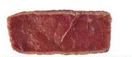
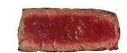
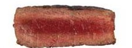
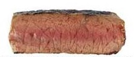
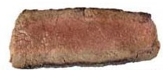
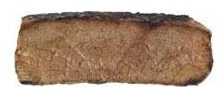

|
How to Cook:
Steaks:
For Steaks, there are 6 different ways to cook your meat, and most people like their meat cooked a certain way. Here are the the different ways to grill your steaks:
| Blue Rare: |
(115F) For 1 inch steaks: Place steak on grill for 3 minutes, then flip for 2 minutes. For 1.5 inch steaks: Place steak on grill for 4 minutes, then flip for 3 minutes. |
 |
| Rare: |
(120F) For 1 inch steaks: Place steak on grill for 4 minutes, then flip for 3 minutes. For 1.5 inch steaks: Place steak on grill for 6 minutes, then flip for 4 minutes. |
 |
| Medium Rare: |
(126F) For 1 inch steaks: Place steak on grill for 5 minutes, then flip for 4 minutes. For 1.5 inch steaks: Place steak on grill for 7 minutes, then flip for 5 minutes. |
 |
| Medium: |
(125F) For 1 inch steaks: Place steak on grill for 6 minutes, then flip for 5 minutes. For 1.5 inch steaks: Place steak on grill for 8 minutes, then flip for 6 minutes. |
 |
| Medium Well: |
(140F) For 1 inch steaks: Place steak on grill for 7 minutes, then flip for 6 minutes. For 1.5 inch steaks: Place steak on grill for 9 minutes, then flip for 7 minutes. |
 |
| Well Done: |
(125F) For 1 inch steaks: Place steak on grill for 9 minutes, then flip for 9 minutes. For 1.5 inch steaks: Place steak on grill for 11 minutes, then flip for 11 minutes. |
 |
Here is a technique to test which consistancy your steak is: |

{kind=link}